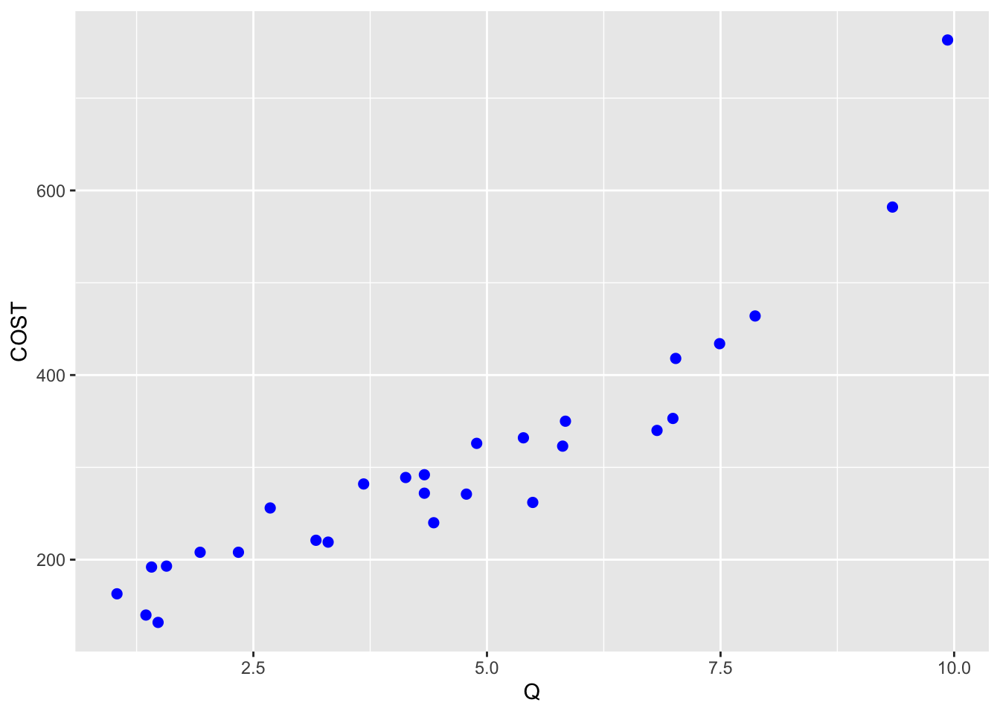
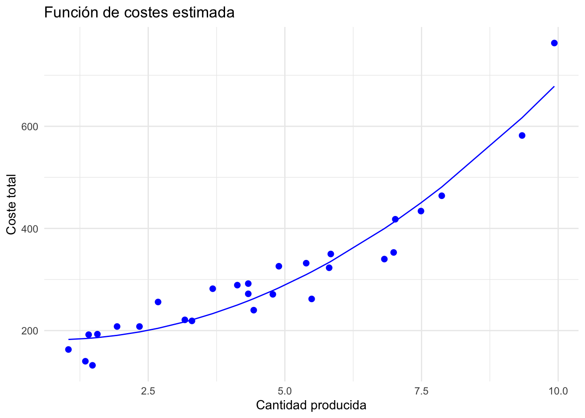
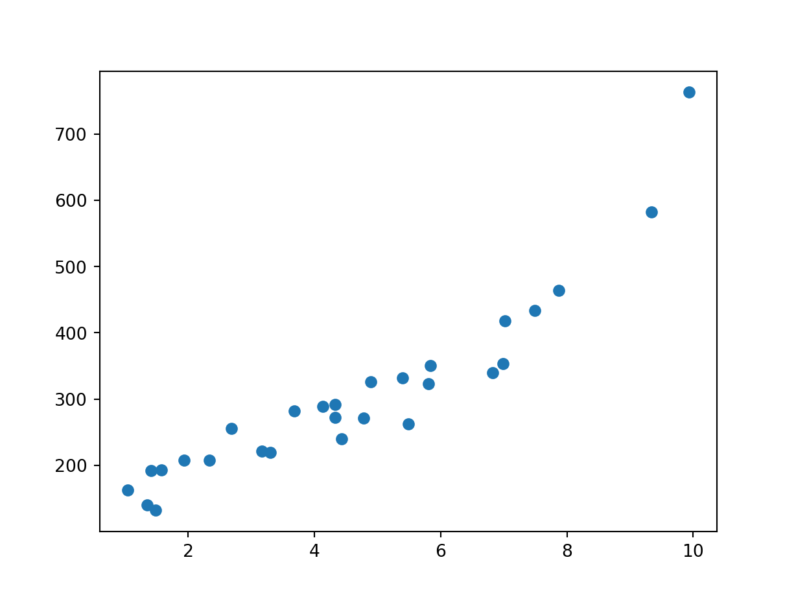
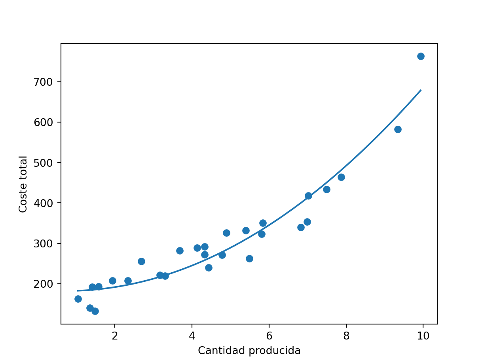

Aplicación 2.3 (Modelo de regresión lineal con forma funcional polinómica): Curva de costes en el sector textil
En esta aplicación trabajaremos con datos de series temporales que consisten en 28 observaciones mensuales sobre los costes totales (COST) y la cantidad producida (Q) de una empresa del sector textil.
Se estimará por MCO el siguiente modelo de regresión lineal:
\[COST_{i} = \beta_1 + \beta_2 Q_{i} + \beta_3 Q_{i}^2 + e_{i}\]
es decir, se supondrá que los costes totales son una función polinómica (cuadrática) de la cantidad producida.
Código R
# Lectura de librerías
library(tidyverse)
# Lectura de datos
COST_TEXT <- read_csv("data/COST_TEXT.csv")
# Gráfica de los valores observados
ggplot(COST_TEXT, aes(x = Q, y = COST)) + geom_point(size = 2, color = "blue")
# Estimación del modelo
model <- lm(formula = COST ~ Q + I(Q^2), data = COST_TEXT)
# fórmula alternativa: formula = COST ~ poly(Q, 2, raw = TRUE)
summary(model)
Call:
lm(formula = COST ~ Q + I(Q^2), data = COST_TEXT)
Residuals:
Min 1Q Median 3Q Max
-59.710 -20.401 3.813 18.627 84.682
Coefficients:
Estimate Std. Error t value Pr(>|t|)
(Intercept) 185.154 26.461 6.997 2.47e-07 ***
Q -8.461 11.603 -0.729 0.473
I(Q^2) 5.853 1.112 5.264 1.88e-05 ***
---
Signif. codes: 0 '***' 0.001 '**' 0.01 '*' 0.05 '.' 0.1 ' ' 1
Residual standard error: 37.74 on 25 degrees of freedom
Multiple R-squared: 0.9282, Adjusted R-squared: 0.9224
F-statistic: 161.6 on 2 and 25 DF, p-value: 5.043e-15# Función de costes estimada
ggplot(data = COST_TEXT, aes(x = Q, y = COST)) +
geom_line(aes(y = predict(model,
newdata = data.frame(Q = Q, Q2 = Q^2))),
color = "blue") +
geom_point(size = 2, color = "blue") +
labs(title = "Función de costes estimada",
x = "Cantidad producida",
y = "Coste total") +
theme_minimal()
Código Python
# Lectura de librerías
import numpy as np
import pandas as pd
import matplotlib.pyplot as plt
import statsmodels.formula.api as smf
# Lectura de datos
COST_TEXT = pd.read_csv('data/COST_TEXT.csv')
# Gráfica de los valores observados
plt.scatter(COST_TEXT['Q'], COST_TEXT['COST'])
plt.show()
# Estimación del modelo
model = smf.ols(formula = 'COST ~ Q + I(Q**2)', data = COST_TEXT).fit()
# fórmula alternativa: formula = COST ~ Q + np.power(Q, 2)
print(model.summary()) OLS Regression Results
==============================================================================
Dep. Variable: COST R-squared: 0.928
Model: OLS Adj. R-squared: 0.922
Method: Least Squares F-statistic: 161.6
Date: Tue, 14 Nov 2023 Prob (F-statistic): 5.04e-15
Time: 20:43:05 Log-Likelihood: -139.80
No. Observations: 28 AIC: 285.6
Df Residuals: 25 BIC: 289.6
Df Model: 2
Covariance Type: nonrobust
==============================================================================
coef std err t P>|t| [0.025 0.975]
------------------------------------------------------------------------------
Intercept 185.1539 26.461 6.997 0.000 130.656 239.652
Q -8.4608 11.603 -0.729 0.473 -32.358 15.436
I(Q ** 2) 5.8535 1.112 5.264 0.000 3.563 8.143
==============================================================================
Omnibus: 0.128 Durbin-Watson: 1.805
Prob(Omnibus): 0.938 Jarque-Bera (JB): 0.266
Skew: 0.138 Prob(JB): 0.875
Kurtosis: 2.610 Cond. No. 150.
==============================================================================
Notes:
[1] Standard Errors assume that the covariance matrix of the errors is correctly specified.# Función de costes estimada
Q_min = COST_TEXT['Q'].min()
Q_max = COST_TEXT['Q'].max()
Q_values = np.linspace(Q_min, Q_max, num=100)
C_values=model.params[0] + model.params[1]*Q_values + model.params[2]*Q_values**2
plt.plot(Q_values, C_values)
plt.scatter(COST_TEXT['Q'], COST_TEXT['COST'])
plt.xlabel('Cantidad producida')
plt.ylabel('Coste total')
plt.show()